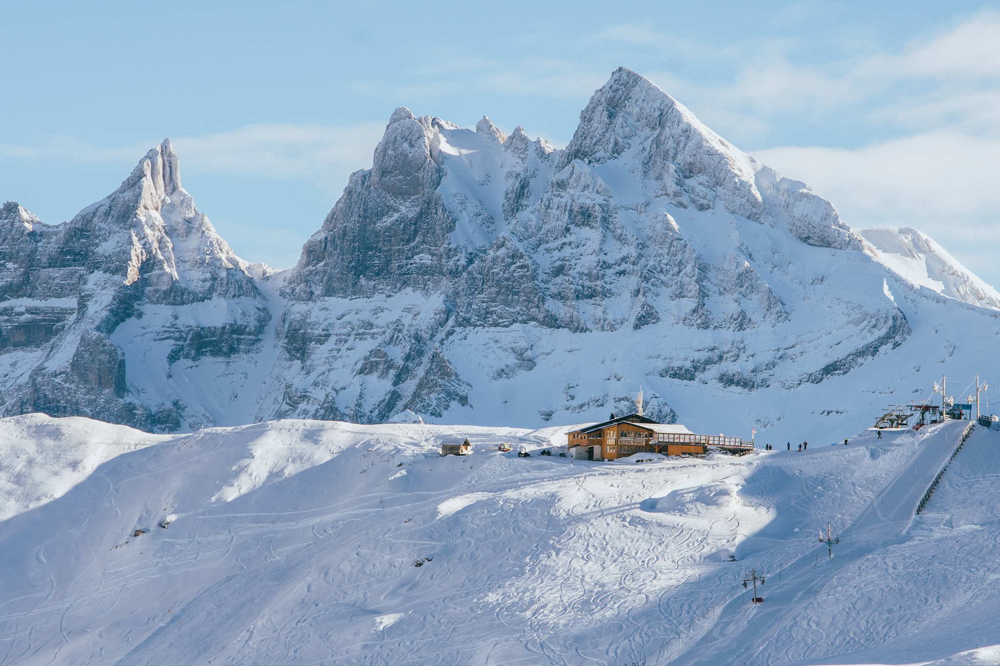
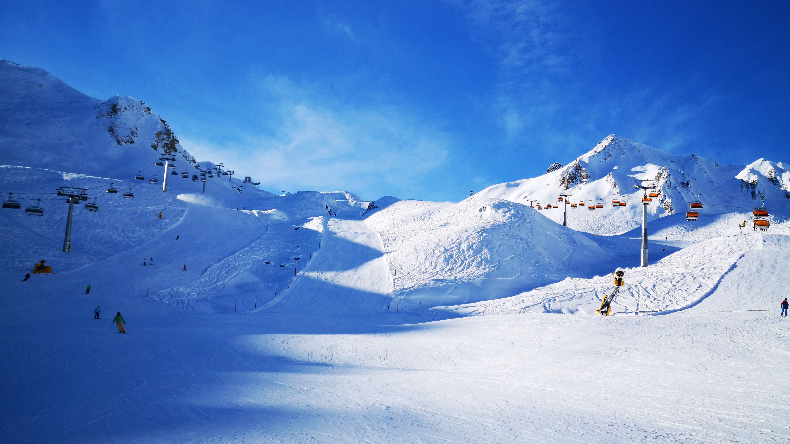
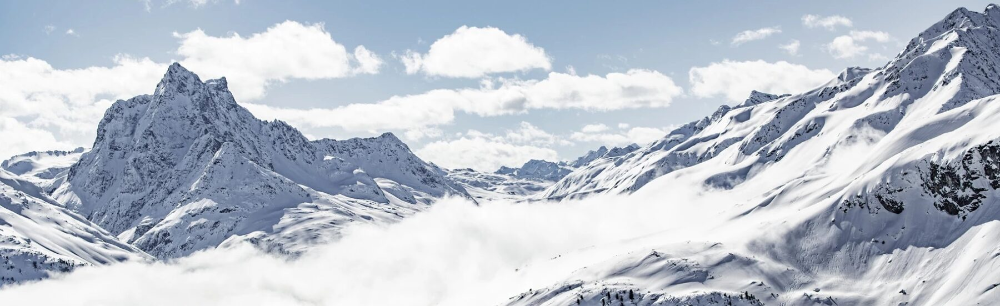
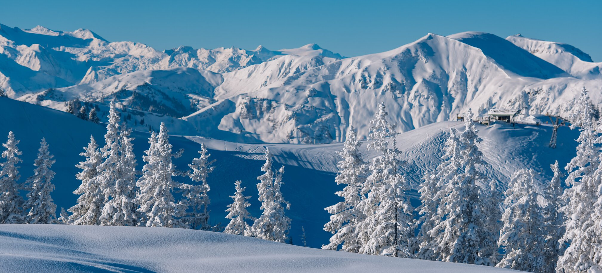

A Portes du Soleil az egyik legnagyobb síkomplexum, amit 12 különálló síközpont ölel körbe. A síterület
egyik különlegessége, hogy az Alpok legmagasabb csúcsán, a franciaországi Mont Blanc és a svájci
Genfi-tó között található, így vitathatatlanul kivételes panoráma tárul elénk síelés közben. Az
összesen
580 kilométeres kiépített pályákon nem csak síelésre, de snowboardozásra is van lehetőség, és a jó hír,
hogy mind a 12 reszort egyetlen síbérlettel igénybe vehető.


Európa legelkápráztatóbb havas tájai, leggyönyörűbb hegyei,

ahol a síelésen és az aktív pihenésen van a hangsúly.

Cortina d'Ampezzo, Olaszország
Észak-Olaszország leghíresebb síparadicsoma a Cortina d'Ampezzo. Nem csak a hobbi sportolók kedvence, de
számtalan síversenyt rendeztek már meg a helyszínen az 1956-os téli olimpia mellett. A város a Dolomitok
csúcsai között fekszik, 1224 méter magasan. A festői téli üdülőhely méltán tartozik a Best of the
Alps
szövetséghez. A sípályákon kívül jégstadionnal és bobpályával is rendelkezik.
Kitzbühel, Ausztria
Kitzbühel, Ausztria egyik leghíresebb és leglátogatottabb síterepe végtelennek tűnő kikapcsolódási
lehetőséggel várja az odalátogatókat. Kitzbühel egyszerre közvetít pezsgő nagyvárosi és kellemes
vidéki
kisvárosi hangulatot az egyedi fekvésének és az aktív kikapcsolódási lehetőségek tárházának
köszönhetően. A síterep minden évben otthont ad a Hahnenkamm Világkupa futamnak és más, nemzetközi
szintű rendezvénynek is.
St. Moritz, Svájc
Svájc egyik legkülönlegesebb és legelőkelőbb síparadicsoma St. Moritz. Az Alpok 12 leghíresebb síterepét
egyesítő Best of the Alps szövetségnek a tagja. A terület hangulata inkább városias, a szállodák és a
Michelin-csillagos éttermek exklúzív légkört varázsolnak a helynek. Gyakran tartanak itt
fesztiválokat
akár télen, akár nyáron, így aki síelés után szívesen bulizna, annak St. Moritz tökéletes desztináció
lehet.
Alpe d’Huez, Franciaország
A meredek, változatos lankáinak köszönhetően a tapasztaltabb síelők egyik kedvenc síparadicsoma az Alpe
d’Huez, ahol a világ leghosszabb fekete jelzésű pályája is található, amely a 3330 méter magas Pic
Blanc-ról indul. A hegymagaslaton a kezdők is bőven találnak maguknak pályát, hiszen ezekben sem
szűkölködik a terep. További érdekesség még, hogy bár a Tour de France útvonalát évről évre
változtatják, az Alpe d’Huez szinte minden évben a tervben szerepel.